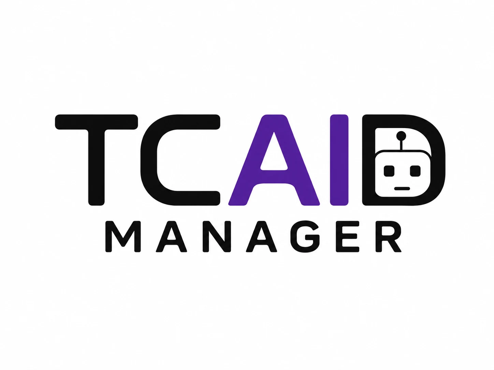
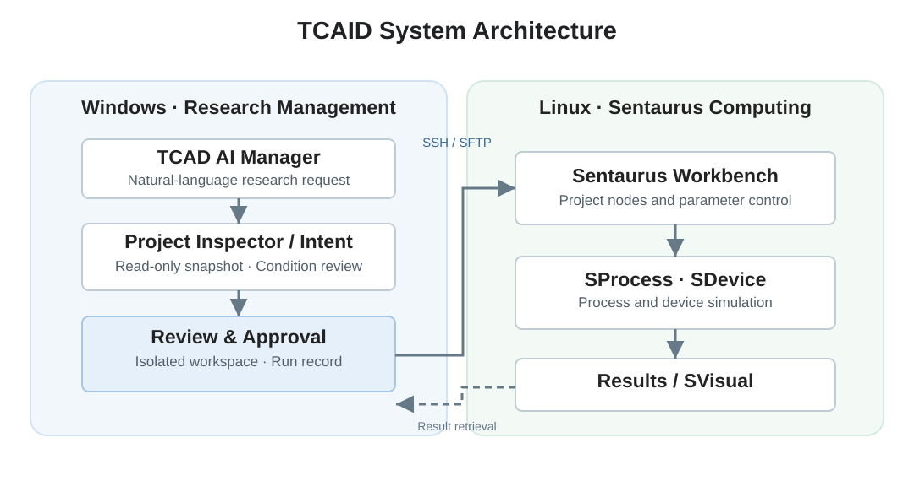
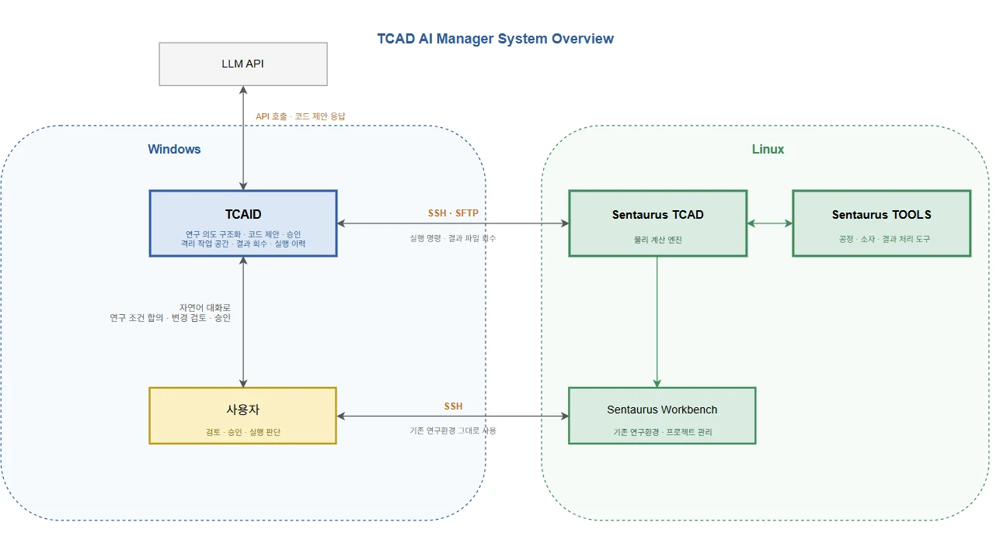
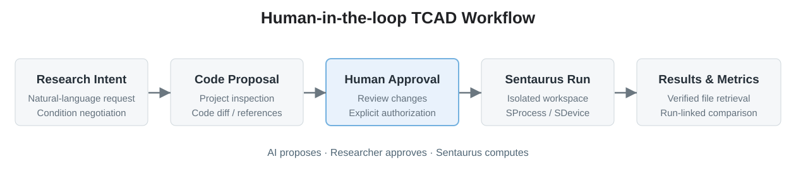
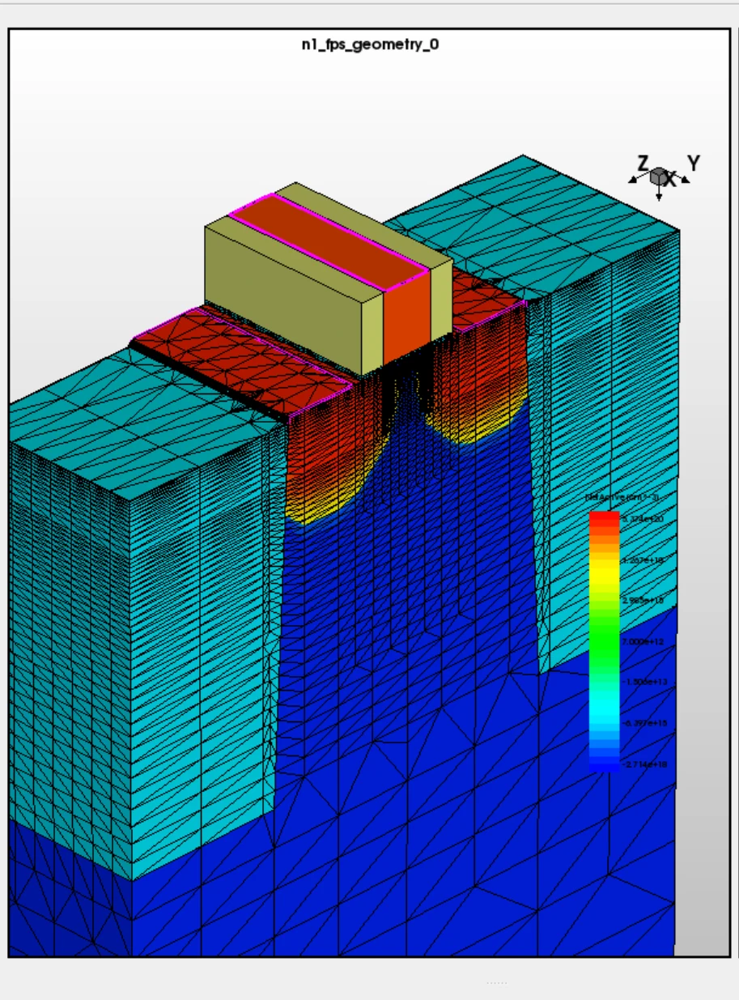
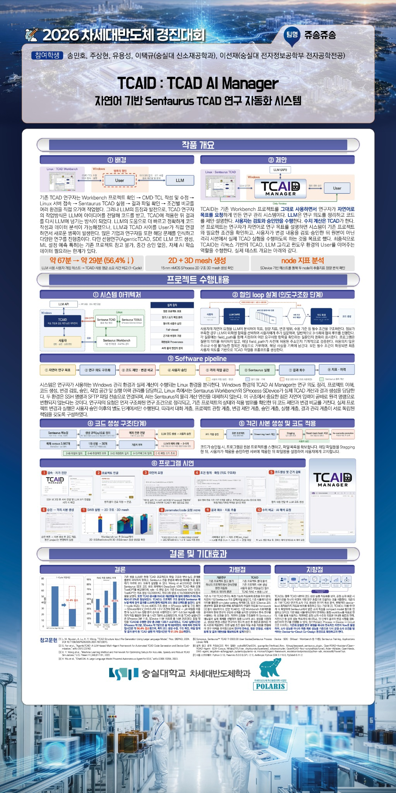

SENTAURUS TCAD · AI SOFTWARE · RESEARCH AUTOMATION
TCAID : TCAD AI Manager
Natural-Language Sentaurus TCAD Research Automation
자연어 연구 요청부터 조건 협의, 코드 검토 및 승인, 격리 실행, 결과 회수와 지표 비교까지 연결하는 Human-in-the-loop TCAD 연구 관리 시스템입니다.
01. 프로젝트 개요

TCAID : TCAD AI Manager
기존 Sentaurus Workbench를 유지하면서 자연어 기반 연구 요청, 코드 생성·검토, 승인, 실제 TCAD 실행 및 실행 이력 관리를 연결하는 소프트웨어 프로젝트입니다.
Summary. TCAID connects natural-language research intent, Workbench project inspection, human approval, isolated Sentaurus execution, and traceable result management.
02. 연구 배경과 문제 정의
Workbench 프로젝트 확인, CMD·TCL 수정, Linux 서버 접속, 공정·소자 시뮬레이션, 결과 파일 회수와 비교는 서로 다른 환경에서 반복됩니다. LLM이 코드를 작성하더라도 연구자가 생성 결과를 실제 프로젝트에 옮겨 적용하고 실행하는 과정에는 여전히 작업 단절과 오류 가능성이 남습니다.
본 프로젝트는 단순 코드 생성이 아닌 연구 작업의 연결에 초점을 두고, 사용자가 변경과 실행을 명시적으로 승인하는 안전한 자동화 흐름을 설계했습니다.
03. 시스템 아키텍처

Windows 측에서 연구 의도, 프로젝트 관찰, 코드 검토·승인 및 실행 이력 관리를 수행합니다. Linux 측에서는 Sentaurus Workbench 및 SProcess·SDevice·SVisual이 물리 계산과 결과 생성을 담당합니다. AI는 수치 시뮬레이터를 대체하지 않습니다.


04. 개발 과정
기존 프로젝트 구조와 의존관계를 읽기 전용으로 파악하고, 사용자가 확정한 조건에 대해서만 코드 제안과 변경 검토를 수행하도록 계층을 분리했습니다. 특히 원격 파일 동작, 승인 유효성, 데이터 출처와 실패 상태를 명시적으로 관리했습니다.



05. 핵심 기능
Project Inspector
Workbench 프로젝트의 artifact·node·의존관계를 읽기 전용 Snapshot으로 관리
Research Intent
확정된 조건과 AI 제안·미확정 조건을 구분하고 자연어 협의 수행
Human Approval
변경 대상·코드·근거를 검토한 뒤 명시적 승인
Isolated Workspace
원본과 분리한 실행 사본에 승인된 변경 적용
SSH / SFTP
Linux 계산환경 연결 및 결과 파일 회수와 상태 검증
Metrics & Provenance
실행별 결과 파일·지표·연구 이력의 연계 관리


06. 프로그램 시연
프로젝트 연결 → 자연어 조건 구체화 → 코드 검토·승인 → 격리 사본 적용 → Sentaurus 실행 → 2D/3D 구조 확인 → SDevice 조건별 비교 → 지표 추출 순으로 진행한 시연입니다.
시연 결과
SProcess: SVisual에서 2D 구조 및 3D mesh 생성 확인.
SDevice: Vd = 0.5 V / 1.0 V의 node 분기·실행과 실행별 ion_max 수치 비교.
SProcess · 2D/3D 공정 구조 생성


SDevice · Drain Bias 두 조건 비교


07. 검증 및 성과
| 검증 | 확인된 결과 |
|---|---|
| 자동 테스트 | 4,307건 통과 / 3건 건너뜀 / 0건 실패 (제출 보고서 기준) |
| 실환경 연결 | SSH 연결, 원격 SDevice 실행, SFTP 결과 파일 회수 확인 |
| SProcess | 코드 적용·실행 후 2D 구조 및 3D mesh 확인 |
| SDevice | Vd 두 조건, Workbench node 분기, 실행별 ion_max 비교 |
| 작업시간 사례 | 경진대회 포스터의 1-Cycle 사례: 약 67분 → 약 29분 |
자동 테스트와 통합 GUI 시연, TCAD 결과의 물리적 타당성 검증은 서로 다른 검증 범위입니다.
08. 한계 및 추가 연구
.plt 및 gvars.dat 등 다양한 실제 결과 형식의 범용 분석, 다중 실행의 물리 기반 AI 해석, parameter sweep, 수렴 진단과 자동 물리적 타당성 검증은 추가적인 구현·검증이 필요한 범위입니다.
본 연구의 핵심 성과는 연구자가 통제권을 유지하면서 자연어 연구 요청부터 실제 계산과 지표 관리까지 연속적으로 처리하는 흐름을 구현·시연했다는 점입니다.
09. 공동 개발 기록
숭실대학교 송민호·주상현·유용성·이선재·이택규, 총 5인 공동 개발 프로젝트입니다.
담당: 프로젝트 총괄, 설계·개발 및 발표. 본 포트폴리오는 공동 프로젝트의 구현과 검증 내용을 중심으로 정리했습니다.
10. 발표 및 수상
2026 차세대반도체 경진대회 · 시스템/SW 분야 최우수상
